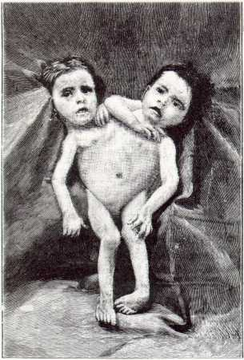
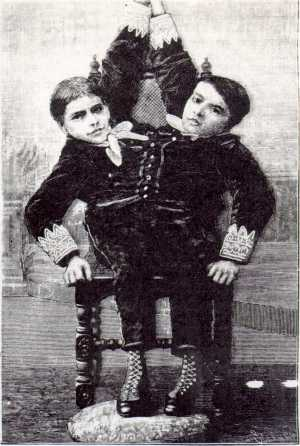

| [According to MT, the story that eventually became Pudd'nhead Wilson began when he saw "a picture of a youthful Italian freak." Perhaps that picture was one of the ones here, which were printed with the attached article in Scientific American, December 1891] |
|
 We give illustration of what are probably the most remarkable human twins that have ever approached maturity. They recently arrived in this country. They are known as the brothers Giovanni and Giacomo Tocci. They were born on July 4, 1875 . . . The twins are connected from the sixth rib downward, and have but one pair of legs and a single abdomen. . . . They have two distinct stomachs, hearts, and pairs of lungs. The arterial and respiratory systems are quite distinct; the heart beats and breathing differing often in the two individuals. . . . Their lives are distinct. They have regions of common sensibility, and of purely individual sensation. One often sleeps when the other wakes. There is no direct correspondence of their appetites. One may be hungry while the other is fast asleep. In their general appearance there is nothing repulsive. They have bright, intelligent faces, not of the peculiar cast common to cripples. They are educated and write their names as souvenirs for visitors. They are able to stand, but have not yet succeeded in walking, as each leg is governed by its own brain. The want of correspondence has proved fatal to any attempts in this direction. They can stand quietly, so that it is not only a question of strength. At their home they spend much of their time on the floor, using their inner arms for the most part, crawling and tumbling about and thus getting a certain amount of exercise. They can dress and undress themselves. The one on the reader's left as he faces the picture, Giavanni, drinks beer in considerable quantities. The other one, Giacomo, not liking beer, drinks mineral water in its place. Giovanni is quite fond of sketching and draws with some spirit. He rests the book or paper on his knee. Sometimes his brother, who is more of a talker and more volatile in disposition, finding some fault with the drawing, will kick the drawing off his knee. All this in good part, for they live on excellent terms with each other, and seem unconscious of any misfortune in their condition. They are disconnected as regards illness. Quite recently one of them had a cold, while the other was suffering from a bilious attack. The Siamese twins Eng and Chang, who died in 1874, within a few hours of each other, at the age of sixty years, were very celebrated. . . . Before the Siamese twins, the "Hungarian sisters," Helena and Judith (1701-1723), obtained much celebrity. Their region of connection was the sacrum. The South Carolina negresses, Millie and Christine, exhibited under the misleading title of the two-headed nightengale, were another interesting example of twinning. . . . They had four legs, and were really not much more closely connected than the Siamese twins. They enjoyed excellent health and spirits and used to sing together. They progressed by walking either on the rear pair of legs or on all four, in which case they moved sidewise. Waltzing was one of their accomplishments. . . . They were born about 1851. |